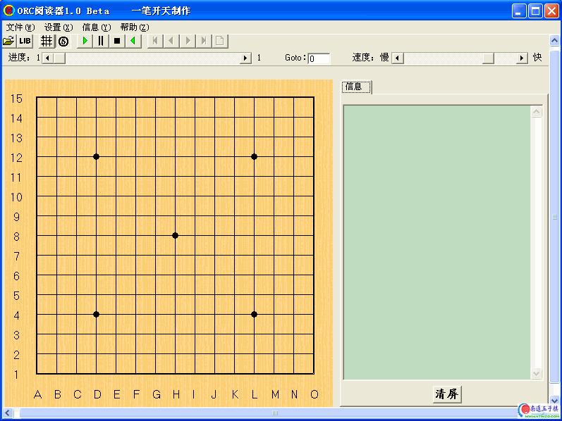

ORC阅读器
#1 ORC阅读器 作者：有志青年 发表时间：2007-3-14 11:24:55

快速入门：
一、【我的常用设置】
1、取消显示棋子信息，阅读orc课件更清净。
2、不显示数字，不选中“⑤”按钮，很多习题的落点顺序不是实战顺序，看了反而疑问多。
二、【我的常用操作】
1、打开orc课件
2、在棋盘上点击鼠标左键，阅读orc课件
3、在棋盘上点击鼠标右键，返回上一个步骤
4、在出现棋谱时，可以选择分析模式，自行拆解，并可随时退回到课程讲解中来。
详细使用说明如下，完整阅读对于更好的使用orc阅读器有好处。
ORC阅读器使用说明
很早就听说ORC了，只是一直没机会去听课，好在有朋友把上课的内容录制成orc文件，让我能够欣赏到GM的精彩讲解。在此对吕文哲老师、各位GM和制作课程录像的朋友表示感谢！
阅读文件我采用的是RenjuClassWorks.exe 2.4版（2003.12.1），使用过程中总感觉不太顺手，于是想编一个专用的阅读器，实现一些自己常用的功能。编了一段时间，总算初步成形了。虽然软件还很粗糙，但先拿出来给各位评评吧，有好的建议不妨提出来。
软件功能很简单，下面简单讲解一下吧。
一、菜单：
（一）文件：
1、打开：选择要打开的orc文件。
2、保存：把当前棋盘上的棋保存为lib文件。
3、退出：关闭程序。
（二）设置：
1、分析模式：选中该选项，进入分析模式。这时棋盘颜色会改变，你可以在这种模式下，自己走走看看。同时，一些快速按键可以使用了。再次点击该项，回到阅读模式。该项前打勾表示选中状态，后同。
2、显示数字：选中时棋子上显示数字，否则不显。
（三）信息：
1、棋子变动方式：未选中时，在棋盘上每次单击鼠标，信息栏内增加一条信息（聊天或行棋信息）；选中时，每单击一次，信息栏显示两次行棋间信息。
2、每次显示清屏：在显示前将信息栏中的信息清除，只显示本次操作信息。
以上两项只使用于阅读状态下，自动播放情况无效。
3、显示老师信息：在信息栏中显示老师的信息。
4、显示学生信息：在信息栏中显示学生的信息。
5、显示棋子信息：在信息栏中显示行棋信息。
根据个人情况自行设定需要的显示信息，但不宜太杂。
（四）帮助：
1、使用说明。你现在不就看着吗？
2、版本信息。不想做太复杂，版本不会很多吧。
二、快速按键：
把鼠标放在上面一会，就能看到提示。
第一组，同文件菜单。
第二组，同设置菜单。
第三组，为自动播放、暂停、停止和倒退按键，配合控制速度的滚动条，可以控制播放的过程。
点击播放按键，开始播放，播放完毕，停留在最后。
暂停，在播放或倒退时，可以停下来。
停止，停止播放或倒退，并且回到课程开始处。
第四组，为分析模式下的棋子控制按键。分为前一步、后一步、第一步、最后一步及清除按键。
三、棋盘：
阅读模式下，鼠标左键单击棋盘，软件读入下一条信息，棋面发生变化，或在信息栏显示一条信息。单击右键，读入上一条信息，即课程回退。
分析模式，单击左键，棋盘增加棋子；单击右键，回到前一步。
四、滚动条等：
1、进度条：显示当情课程进度，左右数字表示该课程信息数。鼠标移动其上一会，可以看到你当前的信息顺序数。可以拖动状态条至你想看的位置，也可在旁边的Goto栏输入你想跳转的地方。
2、速度条：不用多解释了吧，调整自动播放及倒退的速度。
3、Goto：阅读状态下，可以到你指定的课程进度。
4、信息栏：显示上课信息，下方有个清屏的按键，可用于清除屏幕信息。
五、有关软件：
1、信息显示采用memo组件，显示效果不好，据说有好的控件，可以实现多颜色和字体变换，下步再说吧，现在没空去找。^_^
2、本软件中，信息显示时，学生如果上课过程中一次发出的多行信息，除第一行被认为是学生信息外，其余全部认为是老师信息。这种情况不多，只有在老师信息和学生信息中只选其一时会略有影响，我觉得无伤大雅，不想改了。
3、时间控制方式播放，可以实现，但需要实现吗？
4、禁手显示，多层禁手还没想好。
5、不修改注册表，不产生ini文件，各项设置不会保存，我下次再改这项吧。
编这些东东纯属业余爱好，可以随意拷贝。如果您能喜欢，就是我最大的满足。使用过程中如出现什么问题，欢迎给我来信。
一笔开天 二〇〇四年十月
#2 Re:ORC阅读器 作者：人工智能 发表时间：2007-3-18 20:09:08
感谢有志青年 同时请大家看贴后回复 表现出最起码的尊重 表学我 光下载 下棋和做人一样 有宽广的胸怀才能下好棋
#3 Re:ORC阅读器 作者：yidefei 发表时间：2007-3-19 17:17:25
还是用惯了RenjuClassWorks.exe 2.4，
#4 Re:ORC阅读器 作者：游客 发表时间：2007-3-31 0:18:10
感谢制作#5 Re:ORC阅读器 作者：聪明有余 发表时间：2007-4-10 11:26:30
谢谢 我喜欢这种环境#6 Re:ORC阅读器 作者：伊莉贝尔 发表时间：2007-5-8 20:43:07
试用一下,谢谢了#7 Re:ORC阅读器 作者：天线宝宝 发表时间：2007-5-13 19:42:03
我下在了，可还是打不开。orc文件#8 Re:ORC阅读器 作者：行云流水 发表时间：2007-5-14 13:10:46
这个不错，以前居然没有注意。这个基本可以实现线下讲课的。呵呵
#9 Re:ORC阅读器 作者：冰蓝蝶谷 发表时间：2007-6-2 10:02:06
谢谢．．．#10 Re:ORC阅读器 作者：5子~学遥 发表时间：2007-8-29 17:36:55
太感谢了!
#11 Re:ORC阅读器 作者：gedeqi 发表时间：2007-9-5 16:49:03
还米试过 效果咋样
#12 Re:ORC阅读器 作者：zyhua 发表时间：2007-9-14 20:17:45
非常感谢提供
#13 Re:ORC阅读器 作者：庭小 发表时间：2007-9-23 16:33:44
xie xie#14 Re:ORC阅读器 作者：qq7308 发表时间：2007-11-22 21:05:18
感谢分享#15 Re:ORC阅读器 作者：leehee 发表时间：2007-11-30 20:28:43
顶顶!~~~~~~~~~~~~~~
#16 Re:ORC阅读器 作者：TaoWow 发表时间：2007-12-17 16:59:20
感谢#17 Re:ORC阅读器 作者：晏如庐 发表时间：2008-8-1 10:06:48
打不开啊?怎么办？#18 Re:ORC阅读器 作者：来客沙丝 发表时间：2009-3-9 18:07:06
不会用啊。怎么下载啊。
#19 Re:ORC阅读器 作者：刀魂 发表时间：2009-3-9 19:26:21
谢谢有志大哥 的分享！！！#20 Re:ORC阅读器 作者：陈习龙 发表时间：2009-3-10 15:03:27
学习啦。。。#21 Re:ORC阅读器 作者：来客沙丝 发表时间：2009-3-25 20:03:22
下载了，也没法用。#22 Re:ORC阅读器 作者：梧桐影 发表时间：2009-4-18 14:33:38
谢谢楼主！下载
、、、
#23 Re:ORC阅读器 作者：阿又 发表时间：2009-10-31 18:08:43
初心者，学习进#24 Re:ORC阅读器 作者：神秘幽灵 发表时间：2009-11-12 22:13:37
thank you very much!!!#25 Re:ORC阅读器 作者：影影绰绰 发表时间：2009-12-8 0:20:05
thanks!#26 Re:ORC阅读器 作者：迅 发表时间：2010-1-7 19:49:53
很感谢啊，，，#27 Re:ORC阅读器 作者：aabb 发表时间：2010-1-25 16:10:35
谢谢
#28 Re:ORC阅读器 作者：地下勇士 发表时间：2010-4-7 22:52:11
刚想走，看到二楼，那就飘过，谢了#29 Re:ORC阅读器 作者：沙尘暴来了 发表时间：2010-8-28 11:48:34
谢谢了，很好用。#30 Re:ORC阅读器 作者：四六之间五定中 发表时间：2011-6-29 12:17:42
非常感谢！
#31 Re:ORC阅读器 作者：乱棋 发表时间：2011-7-3 7:25:54
顶